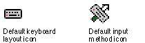
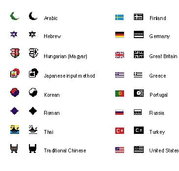
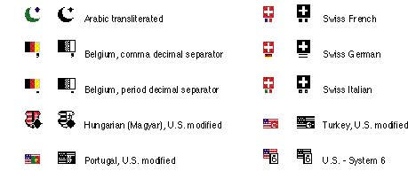
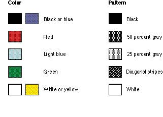
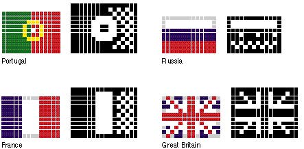

|
Keyboard IconsA keyboard icon represents a localized keyboard layout or input method.If you develop keyboards, input methods, script systems, or keyboard resources, you need to provide icons. (Keyboard icons appear in the Keyboard menu and in the Keyboard control panel.) You need to create a 16-by-16 pixel icon in 1-bit and 4-bit color. If you don't create a keyboard icon, then the system provides a default icon. Figure 8-46 shows the default keyboard layout icon and the default input method icon. Figure 8-46 The default keyboard layout and input method icons  Keyboard icons are a special case of icons. Since they represent a specific type of software they follow design rules different from those for other icons users see on the desktop. The guidelines presented in this section apply only to keyboard icons. For a keyboard icon, use a solid symbol to represent a
keyboard layout for Figure 8-47 Examples of keyboard icons  You can
also add a visual indicator to the keyboard icon to show
some modification. Use a superscript diamond to indicate a
QWERTY transliteration, which is a mapping of sounds from a
language to the Figure 8-48 Examples of modification indicators on keyboard icons  When you design the black-and-white version of a flag icon, use black and a 50 percent gray pattern. These choices provide the best contrast and legibility. To avoid confusion between flags of similar design, use the pattern substitutions for colors shown in Table 8-2. Table 8-2 Table 8-2 Pattern substitutions for colors in keyboard icons  Figure 8-49 shows some keyboard icons that use the correct pattern substitutions. Figure 8-49 Enlarged keyboard icons with correct color substitutions  See the section "The Keyboard Menu" beginning on page 98 in Chapter 4, "Menus," and Inside Macintosh: Text for information on the Keyboard menu. See the chapter "Finder Interface" in Inside Macintosh: Macintosh Toolbox Essentials for more information about displaying custom icons. That chapter also provides information on how to use the bundle resource to associate these icons with your application. |